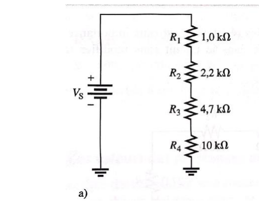
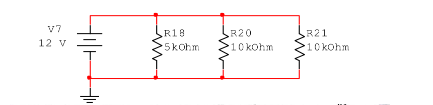

🧩 Entraînement par concept — résous toi-même
Un exercice représentatif par concept, en mode rappel actif : énoncé → tu devines les formules → tu poses le calcul → tu vérifies.
1 · Circuits résistifs

Quelles formules / quelle méthode ?
En série : même courant partout, les résistances s'additionnent, la tension se répartit (diviseur).
- $R_{éq}=R_1+R_2+R_3+R_4$
- $I=\dfrac{V_S}{R_{éq}}$ (identique dans les 4)
- $U_{Ri}=R_i\,I$
Le calcul
$R_{éq}=1+2{,}2+4{,}7+10=$ 17,9 kΩ
$I=\dfrac{10}{17\,900}=$ 0,559 mA
$U_{R1}=0{,}559$ V · $U_{R2}=1{,}23$ V · $U_{R3}=2{,}63$ V · $U_{R4}=5{,}59$ V
Vérif (maille) : $0{,}559+1{,}23+2{,}63+5{,}59=10$ V ✓
Résultat
$R_{éq}=$ 17,9 kΩ · $I=$ 0,559 mA · $U_{R4}=$ 5,59 V

Quelles formules / quelle méthode ?
En parallèle : même tension (12 V) sur chaque branche ; on combine les inverses ; le courant se divise.
- $\dfrac1{R_{éq}}=\dfrac1{R_{18}}+\dfrac1{R_{20}}+\dfrac1{R_{21}}$
- $I_{branche}=\dfrac{V}{R_{branche}}$
Le calcul
$\dfrac1{R_{éq}}=\dfrac1{5k}+\dfrac1{10k}+\dfrac1{10k}=0{,}4$ mS → $R_{éq}=$ 2,5 kΩ
$I_{R18}=\dfrac{12}{5k}=$ 2,4 mA · $I_{R20}=I_{R21}=\dfrac{12}{10k}=$ 1,2 mA
Total : $2{,}4+1{,}2+1{,}2=4{,}8$ mA $=\dfrac{12}{2{,}5k}$ ✓ ($R_{éq}$ < plus petite R)
Résultat
$R_{éq}=$ 2,5 kΩ · $I_{R18}=$ 2,4 mA · $I_{R20}=I_{R21}=$ 1,2 mA
2 · Diodes
Quelles formules / quelle méthode ?
Tout est en série. On suppose les 2 diodes passantes (0,7 V chacune) → on retire $2\times0{,}7$ V de la source, le reste se répartit dans les résistances.
- $U_{résistances}=V_S-2\times0{,}7$
- $I=\dfrac{U_{résistances}}{R_3+R_1+R_2}$ (vérifier $I>0$ → hypothèse passante OK)
- $U_{R1}=R_1\,I$
Le calcul
$U_{rés}=5-1{,}4=3{,}6$ V ; $R_{tot}=470+530+220=1220$ Ω
$I=\dfrac{3{,}6}{1220}=$ 2,95 mA (>0 ✓)
$U_{R1}=530\times2{,}95\text{m}=$ 1,56 V
Résultat
$I=$ 2,95 mA · $U_{R1}=$ 1,56 V
3 · Redresseurs
Quelles formules / quelle méthode ?
Transfo (sur l'efficace) → crête → on retire 0,7 V (1 diode) → moyenne. $f$ inchangée.
- $V_{eff,sec}=V_{prim}\dfrac{N_2}{N_1}$ ; $V_{crête,sec}=V_{eff,sec}\sqrt2$
- $V_{crête,sortie}=V_{crête,sec}-0{,}7$
- $V_{moy}=\dfrac{V_{crête,sortie}}{\pi}$ (= 0,318·$V_c$)
- TIC $=V_{crête,sec}$ ; $f_{sortie}=f_{entrée}$
Le calcul
$V_{eff,sec}=230\times\dfrac34=$ 172,5 V
$V_{crête,sec}=172{,}5\sqrt2=243{,}95$ V → $V_{crête,sortie}=243{,}95-0{,}7=$ 243,25 V
$V_{moy}=\dfrac{243{,}25}{\pi}=$ 77,4 V
TIC $=$ 243,95 V ; $f_{sortie}=$ 50 Hz
Résultat
$V_{eff}=$ 172,5 V · $V_{c,out}=$ 243,25 V · $V_{moy}=$ 77,4 V · TIC 243,95 V · $f=$ 50 Hz
Quelles formules / quelle méthode ?
Pont = double alternance : on retire 1,4 V, la moyenne double, la fréquence double.
- $V_{crête,sec}=V_{eff}\sqrt2$ ; $V_{crête,sortie}=V_{crête,sec}-1{,}4$
- $V_{moy}=\dfrac{2\,V_{crête,sortie}}{\pi}$ (= 0,637·$V_c$)
- $I_{moy}=\dfrac{V_{moy}}{R}$ ; TIC $=V_{crête,sec}-0{,}7$ ; $f_{sortie}=2f$
Le calcul
$V_{crête,sec}=60\sqrt2=84{,}85$ V → $V_{crête,sortie}=84{,}85-1{,}4=$ 83,45 V
$V_{moy}=\dfrac{2\times83{,}45}{\pi}=$ 53,13 V
$I_{moy}=\dfrac{53{,}13}{400}=$ 0,133 A
TIC $=84{,}85-0{,}7=$ 84,15 V ; $f_{sortie}=$ 100 Hz
Résultat
$V_{c,out}=$ 83,45 V · $V_{moy}=$ 53,13 V · $I_{moy}=$ 0,133 A · TIC 84,15 V · $f=$ 100 Hz
4 · Condensateur & filtrage
Quelles formules / quelle méthode ?
Charge exponentielle. Repères : 63 % à 1τ, 87 % à 2τ, ≈100 % à 5τ.
- $\tau=R\,C$
- $u_C(t)=V\,(1-e^{-t/\tau})$
Le calcul
$\tau=10\,000\times1\times10^{-9}=$ 10 µs
$u_C(10\,\mu s)=15(1-e^{-1})=$ 9,48 V (1τ → 63 %)
$u_C(20\,\mu s)=15(1-e^{-2})=$ 12,97 V (2τ → 87 %)
$u_C(50\,\mu s)=15(1-e^{-5})=$ 14,90 V (5τ → ≈100 %)
Résultat
τ = 10 µs · 10 µs → 9,48 V · 20 µs → 12,97 V · 50 µs → 14,90 V
Quelles formules / quelle méthode ?
L'ondulation relative vaut $\approx\dfrac1{f\,R\,C}$. On isole $C$. ⚠️ Pour un pont, $f=2\times60=120$ Hz.
- $C=\dfrac{1}{r\,f\,R}$
Le calcul
$C=\dfrac{1}{0{,}01\times120\times1500}=$ 556 µF
Plus on veut peu d'ondulation, plus $C$ est grand. On prendrait ≥ 556 µF normalisé (ex. 680 µF).
Résultat
$C=$ 556 µF (→ 680 µF normalisé)
5 · LED
Quelles formules / quelle méthode ?
Les 2 LED « consomment » $2\times2=4$ V (tension fixe). Le reste tombe sur R, qui fixe le courant.
- $I=\dfrac{V-2\,V_{LED}}{R}$
Le calcul
$I=\dfrac{12-4}{150}=\dfrac{8}{150}=$ 53,3 mA
Résultat
$I=$ 53,3 mA
6 · Diode Zéner
Quelles formules / quelle méthode ?
Sans charge, $I_R=I_Z$. La Zéner régule tant que $I_{Zmin}\le I_Z\le I_{Zmax}$.
- $V_{EN}=V_Z+I_Z\,R$ → min avec $I_{Zmin}$, max avec $I_{Zmax}$
- $P_{max}=V_Z\,I_{Zmax}$
Le calcul
$V_{EN,min}=6{,}8+0{,}005\times100=$ 7,3 V
$V_{EN,max}=6{,}8+0{,}12\times100=$ 18,8 V
$P_{max}=6{,}8\times0{,}12=$ 0,816 W
Résultat
$V_{EN}\in[$ 7,3 V ; 18,8 V $]$ · $P_{max}=$ 0,816 W
Quelles formules / quelle méthode ?
Le courant dans R est fixé. Si la charge tire trop peu, l'excédent passe dans la Zéner et peut dépasser $I_{Zmax}$. La charge doit absorber au moins $I_R-I_{Zmax}$.
- $I_R=\dfrac{V_{EN}-V_Z}{R}$
- $I_{ch,min}=I_R-I_{Zmax}$
- $R_{ch,max}=\dfrac{V_Z}{I_{ch,min}}$
Le calcul
$I_R=\dfrac{8-5{,}1}{22}=131{,}8$ mA
$I_{ch,min}=131{,}8-70=61{,}8$ mA
$R_{ch,max}=\dfrac{5{,}1}{0{,}0618}=$ 82,5 Ω
Une charge > 82,5 Ω tirerait moins de 61,8 mA → $I_Z>70$ mA → Zéner grillée.
Résultat
$R_{ch,max}=$ 82,5 Ω
7 · Régulateurs intégrés
Quelles formules / quelle méthode ?
On remonte la chaîne, puis on vérifie que l'entrée du 7812 reste $>V_{out}+2$ V. La sortie est fixée à 12 V.
- $V_{eff,sec}=\dfrac{V_{prim}}{6}$ → $V_{crête}=V_{eff}\sqrt2$ → après pont $-1{,}4$ V
- Condition : $V_{in}>V_{out}+2$ V
- $I_{charge}=\dfrac{V_{out}}{R}$
Le calcul
$V_{eff}=\dfrac{120}{6}=20$ V → $V_{crête}=20\sqrt2=28{,}3$ V → après pont $28{,}3-1{,}4=$ 26,9 V
$26{,}9>12+2$ V → le LM7812 est correctement alimenté (sort 12 V stables)
$I_{charge}=\dfrac{12}{100}=$ 120 mA
Résultat
Entrée régulateur ≈ 26,9 V (> 14 V → OK) · $I_{charge}=$ 120 mA
8 · Transistors bipolaires
Quelles formules / quelle méthode ?
$I_C$ par la loi d'Ohm sur $R_C$, puis on enchaîne.
- $I_C=\dfrac{V_{RC}}{R_C}$
- $\beta_{CC}=\dfrac{I_C}{I_B}$ · $I_E=I_C+I_B$ · $\alpha_{CC}=\dfrac{I_C}{I_E}$
Le calcul
$I_C=\dfrac{5}{1000}=$ 5 mA
$\beta_{CC}=\dfrac{5\text{m}}{50\mu}=$ 100 · $I_E=5{,}05$ mA · $\alpha_{CC}=\dfrac{5}{5{,}05}=$ 0,99
Résultat
$I_C=$ 5 mA · $\beta=$ 100 · $I_E=$ 5,05 mA · $\alpha=$ 0,99
Quelles formules / quelle méthode ?
D'abord $I_B$ (maille d'entrée), puis $I_C=\beta I_B$, puis $V_{CE}$.
- $I_B=\dfrac{V_{BB}-0{,}7}{R_B}$
- $I_C=\beta_{CC}\,I_B$ ; $V_{CE}=V_{CC}-R_C\,I_C$
Le calcul
$I_B=\dfrac{5-0{,}7}{10\,000}=$ 0,43 mA
$I_C=150\times0{,}43\text{m}=$ 64,5 mA
$V_{CE}=10-100\times0{,}0645=$ 3,55 V
Résultat
$I_B=$ 0,43 mA · $I_C=$ 64,5 mA · $V_{CE}=$ 3,55 V
Quelles formules / quelle méthode ?
La droite relie le blocage ($V_{CE}=V_{CC}$) à la saturation ($I_{Csat}=V_{CC}/R_C$). Si $\beta I_B$ dépasse $I_{Csat}$, on sature et $\beta$ ne s'applique plus.
- $I_{Csat}=\dfrac{V_{CC}}{R_C}$ ; $V_{CE,bloc}=V_{CC}$
- $I_B=\dfrac{V_{BB}-0{,}7}{R_B}$ → $I_C=\beta I_B$ (si $
Le calcul
$I_{Csat}=\dfrac{15}{1000}=15$ mA ; $V_{CE,bloc}=15$ V
$I_B=\dfrac{3-0{,}7}{10\,000}=0{,}23$ mA → $I_C=50\times0{,}23\text{m}=$ 11,5 mA $<15$ → actif, $V_{CE}=15-11{,}5=3{,}5$ V
Si $\beta=100$ : $I_C^{théo}=100\times0{,}23\text{m}=23$ mA $>15$ → saturé : $I_C=15$ mA, $V_{CE}\approx0$
Résultat
Q (β=50) : $I_C=$ 11,5 mA, $V_{CE}=$ 3,5 V (actif) · β=100 → saturé, $I_C=15$ mA
Quelles formules / quelle méthode ?
Méthode interrupteur : courant de saturation → courant de base minimal → $R_B$ qui le fournit.
- $I_{Csat}=\dfrac{V_{CC}-V_{CEsat}}{R_C}$ ; $I_{Bmin}=\dfrac{I_{Csat}}{\beta}$
- $R_B=\dfrac{V_{EN}-0{,}7}{I_{Bmin}}$
Le calcul
$I_{Csat}=\dfrac{15}{1200}=12{,}5$ mA
$I_{Bmin}=\dfrac{12{,}5\text{m}}{50}=0{,}25$ mA
$R_B=\dfrac{4{,}3}{0{,}25\text{m}}=$ 17,2 kΩ
$R_B$ = valeur maximale pour juste saturer ; en pratique on prend plus petit.
Résultat
$R_B=$ 17,2 kΩ (max)
Quelles formules / quelle méthode ?
Le pont fixe $V_B$ ; on en déduit $V_E$, puis le courant (via Re), puis $V_C$ et $V_{CE}$.
- $V_B=V_{CC}\dfrac{R_{19}}{R_{16}+R_{19}}$ → $V_E=V_B-0{,}7$
- $I_C\approx I_E=\dfrac{V_E}{R_E}$
- $V_C=V_{CC}-R_C I_C$ ; $V_{CE}=V_C-V_E$ ; saturé ? comparer à $I_{Csat}=\dfrac{V_{CC}}{R_C+R_E}$
Le calcul
$V_B=15\times\dfrac{4{,}7}{22+4{,}7}=$ 2,64 V → $V_E=$ 1,94 V
$I_C\approx I_E=\dfrac{1{,}94}{680}=$ 2,85 mA
$V_C=15-1500\times2{,}85\text{m}=$ 10,7 V ; $V_{CE}=10{,}7-1{,}94=$ 8,79 V → non saturé
Résultat
$V_B=$ 2,64 V · $V_E=$ 1,94 V · $I_C=$ 2,85 mA · $V_{CE}=$ 8,79 V (non saturé)